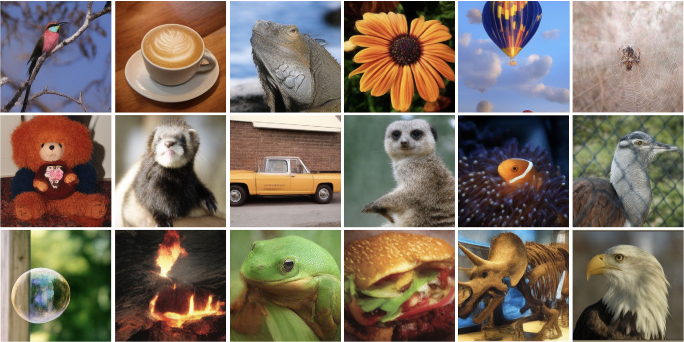
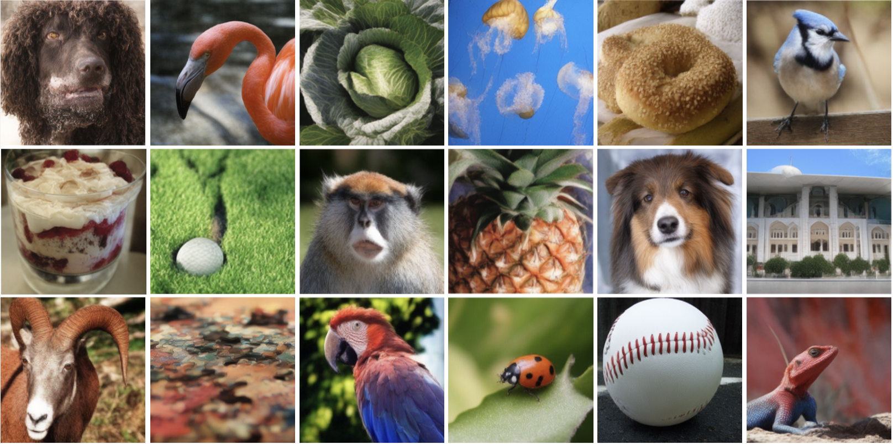
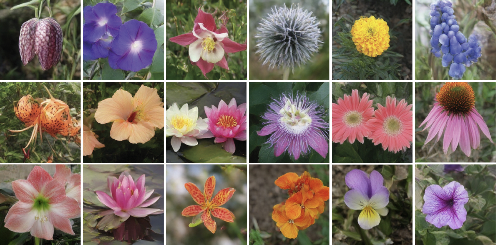
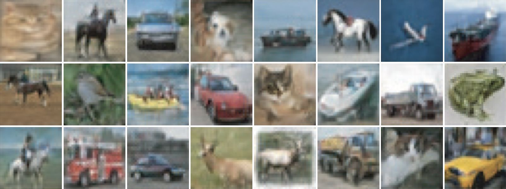

ImageNet (256x256, 4-step generation)

ImageNet (256x256, 4-step generation)

Animal-Faces (256x256, 1-step generation)

Oxford-Flowers (256x256, 2-step generation)

CIFAR-10 (32x32, 1-step generation)
Sphere Encoder, trained entirely from scratch, can generate sharp and high-fidelity images in within 4 steps.